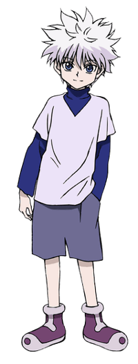

Killua Zoldyck (キルア=ゾルディック, Kirua Zorudikku) adalah karakter utama dalam serial Hunter x Hunter karya Yoshihiro Togashi. Ia berasal dari keluarga Zoldyck, klan legendaris yang dikenal sebagai pembunuh bayaran paling berbahaya di dunia. Dari kecil, Killua dididik untuk menjadi pembunuh tanpa emosi dengan kekuatan dan keterampilan yang luar biasa. Namun, ia memiliki jiwa pemberontak dan memilih untuk meninggalkan keluarganya demi mencari kebebasan dan makna hidup di luar bayang-bayang profesi keluarganya. Keputusan ini menjadi awal dari petualangannya yang penuh tantangan.
Persahabatan Killua dengan Gon Freecss menjadi bagian penting dari perjalanan hidupnya. Di balik sikapnya yang ceria dan usil, Killua sangat peduli dan setia pada Gon, bahkan rela menghadapi bahaya demi melindungi sahabatnya. Hubungan mereka membantu Killua untuk melepaskan trauma masa lalu dan mengembangkan rasa percaya diri. Namun, di sisi lain, masa lalunya sebagai pembunuh kerap menghantuinya, membuatnya terjebak antara insting melawan dan keinginannya untuk hidup normal.
Selain keterampilan fisik yang hebat, Killua memiliki kemampuan Nen dan teknik listrik andal bernama Godspeed, yang membuatnya sangat cepat dan mematikan. Meskipun terbiasa dengan kekerasan, perkembangan emosionalnya terlihat jelas sepanjang cerita. Ia belajar bahwa kekuatan bukanlah segalanya, dan kebahagiaan sejati bisa ditemukan melalui hubungan yang tulus. Kompleksitas kepribadiannya menjadikan Killua salah satu karakter paling menarik dan dicintai oleh para penggemar.
|  | |
|---|---|
| Killua Zoldyck | |
| Kana | キルア=ゾルディック |
| Rōmaji | Kirua Zorudikku |
| Profil | |
| Kelamin | Laki-laki |
| Umur |
12 (Awal) 14 (Sekarang) |
| Tinggi | 158 cm; 5'2" |
| Berat | 49 kg; 107.8 lbs |
Killua memiliki rambut lebat perak, kulit yang sangat terang dan mata biru. Perubahan Matanya tergantung pada suasana hatinya berada, penyempitan dan mengasah ketika ia masuk ke mode pembunuh. Dalam anime adaptasi Nippon Animation, warna mata Killua berubah menjadi hijau selama OVA. Dia juga sering terlihat memegang skateboard hijau (berubah menjadi kuning dalam seri 2011).
Killua biasanya memakai pakaian longgar, dengan pakaian biasa yang terdiri dari kemeja lengan panjang berwarna gelap. Sebagian besar dari pakaiannya memiliki turtleneck. Killua memakai celana panjang, celana pendek longgar dalam manga dan diadaptasi animasi Madhouse, tapi desain karakter Nippon Animation dipersingkat mereka untuk mencapai di atas lututnya. Killua juga memakai sepatu biru dan putih, digambarkan berwarna coklat dan hitam dalam adaptasi Nippon Animation.
Awalnya, Killua diperkenalkan sebagai karakter yang tampaknya mirip dengan Gon tetapi berbeda pada saat yang sama; berwajah tebal, ceria, dan penuh ide-ide nakal. Ia juga salah satu karakter pemikiran-tercepat dalam seri. Ia yakin dengan kemampuan sendiri, sering menjadi rendah hati tentang hal itu; tetapi ketika seseorang memuji dirinya, terutama Gon, ia mendapat malu mudah. Killua juga dikenal karena memiliki gigi manis, karena dia menghabiskan hampir 200 juta Jenny pada makanan ringan ketika ia berada di Arena Surga. Camilan favoritnya adalah cokelat, khususnya Chocolate Balls.
Namun, kekejaman dan bakat dalam membunuh menunjukkan sisi lain dari dirinya - yang mematikan, keras, dan haus darah. Setelah disiksa sejak lahir, Killua telah dikondisikan untuk memiliki toleransi ekstrim untuk racun, listrik dan nyeri. Killua memiliki kelincahan yang luar biasa dan kekuatan yang membuatnya menjadi one-man mesin pembunuh - pasti tidak satupun yang bisa dianggap enteng.
Bertentangan dengan predisposal Killua untuk membunuh adalah loyalitas pantang menyerah kepada teman-temannya dan kebaikan alam. Killua sering menderita sangat dalam upayanya untuk membantu teman-temannya tanpa keluhan. Dia menempatkan orang lain sebelum dirinya sendiri tanpa peduli kesehatan sendiri atau bahkan hidupnya.
Sampai saat ini, cacat terbesar Killua adalah rasa takutnya orang-orang yang tampaknya lebih kuat dari dia (salah satunya kakaknya, Illumi). Killua telah dilatih sebagai pembunuh oleh keluarganya untuk menjadi seseorang yang berhati-hati bahwa ia harus ikut dalam pertempuran apabila kemenangan mutlak terlihat jelas. Hal ini menghambat dia sebagai Hunter. Biscuit menyatakan lebih dari sekali kemenangan yang tidak pernah pasti, dan tergantung pada keadaan, seseorang memiliki potensi untuk mengalahkan lawan yang lebih kuat [1]
Killua terutama berjuang dengan ideologi-ideologi duel selama paruh kedua seri, saat ia mulai menghadapi lawan yang lebih kuat. Ajaran saudaranya tetap tertanam kuat dalam pikirannya, ke titik di mana Biscuit bernubuat bahwa suatu hari ia akan meninggalkan Gon karena hal ini. Biscuit memberi Killua ultimatum: Kalahkan Shoot untuk mengklaim hak untuk pergi dengan Gon dan melawan Semut Chimera atau Killua gagal, ia memutuskan untuk pergi bersama Gon yang dalam penyembuhan dari perjuangannya melawan Knuckle[2], melindunginya sementara itu[3].
Akhirnya ia harus menghadapi ramalan Biscuit ketika dia menemukan seekor prajurit Semut Chimera sementara Gon (yang tidak bisa menggunakan Nen pada saat itu) tidak jauh dan tidak punya cara untuk membela diri. Killua membuat upaya untuk menyelamatkan Gon. Sementara pertempuran dengan Rammot, Killua juga berjuang melawan diri sejatinya. Pada saat begitu, Killua kalah dari Semut Chimera itu. Pada saat terakhir, Killua menyadari bahwa Illumi telah menanamkan jarum di otaknya dulu di waktu Ujian Hunter pertama. Jarum ini berfungsi untuk mengekang dan memaksa Killua untuk mundur dan memenjarakan dirinya dalam zona kenyamanan-nya setiap kali situasi apa pun berpotensi akan membahayakan hidupnya. Setelah melepaskan jarum tersebut, Killua terbebaskan dari pengekangan ini dan mendapatkan kontrol penuh dari bawah sadar untuk membuat keputusan sendiri apakah atau tidak untuk melarikan diri setiap kali ada kebutuhan untuk melawan lawan yang lebih kuat [4]
Killua lahir sebagai anak tengah dari keluarga pembunuh diketahui, Keluarga Zoldyck. Menampilkan janji besar sejak lahir, Killua telah menguasai banyak teknik membunuh pada usia tersebut, dan ditetapkan untuk menjadi salah satu pembunuh keluarga terbaik yang pernah diproduksi. Pada usia tiga tahun, ia mulai pelatihan pada membuntuti orang lain[5]. Ia terpaksa bertarung di Arena Surga turnamen seni bela diri pada usia dari 6, di mana ia butuh dua tahun untuk sampai ke lantai 199 (meskipun ia diterima ke lantai ke-200, ia diundurkan diri oleh Ibunya)[6] Killua memberitahu bahwa sejak lahir, ia telah berlatih sepenuhnya untuk sebagai seorang pembunuh profesional. Killua telah bertahun-tahun berusaha untuk mencoba teknik unik sempurna yang dilakukan dan dimiliki olah pembunuh lainnya. Bosan dan lelah membunuh, Killua tiba-tiba memberontak terhadap keluarganya, melukai kedua nya ibu dan kakak kedua. Dan lari dari rumah untuk ikut Ujian Hunter untuk bersenang-senang[7] Ia bertemu Gon selama bagian pertama dari Ujian Hunter dan mereka menjadi yang terbaik dari teman-teman. Dia pikir bersama-sama dengan Gon, menjadi menarik dan merasakan petualang.